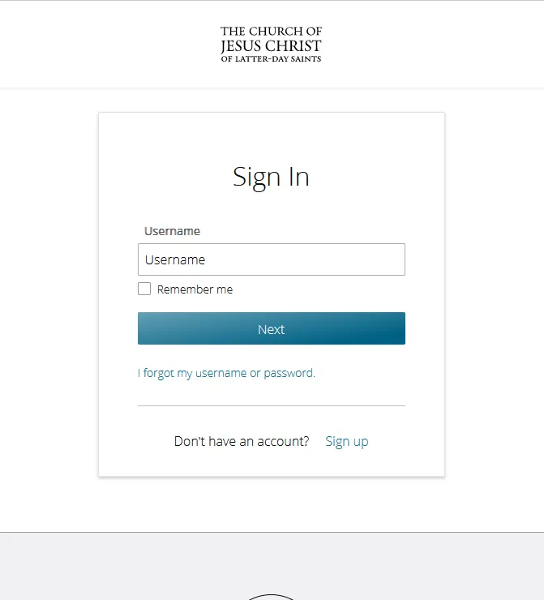
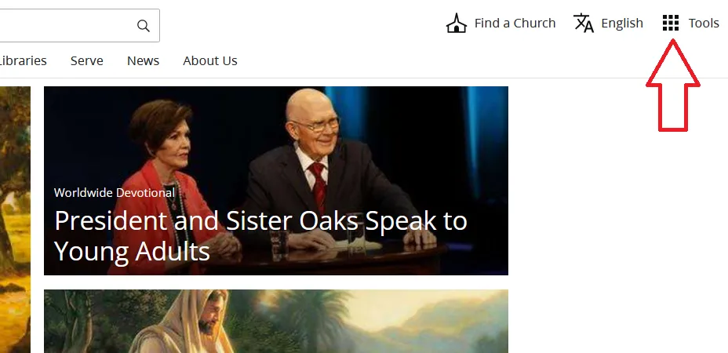
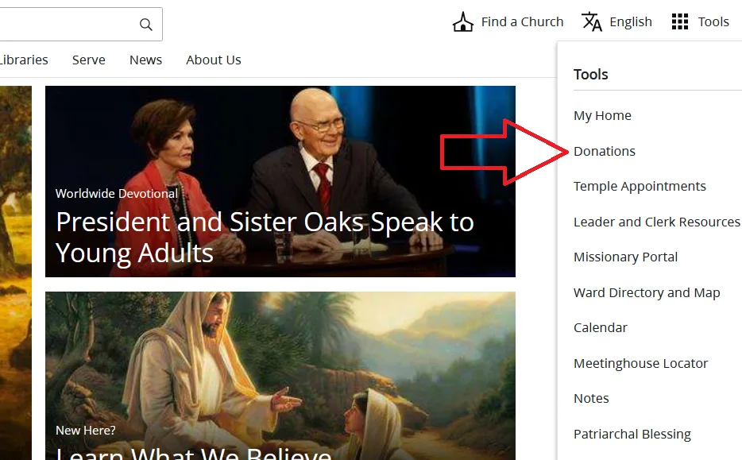
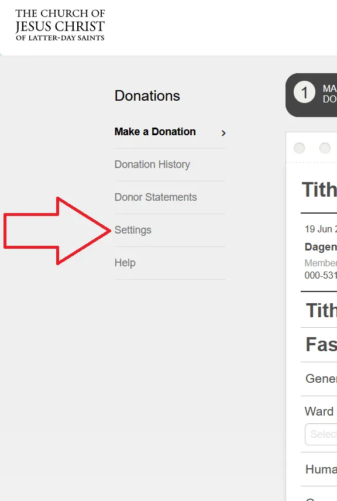
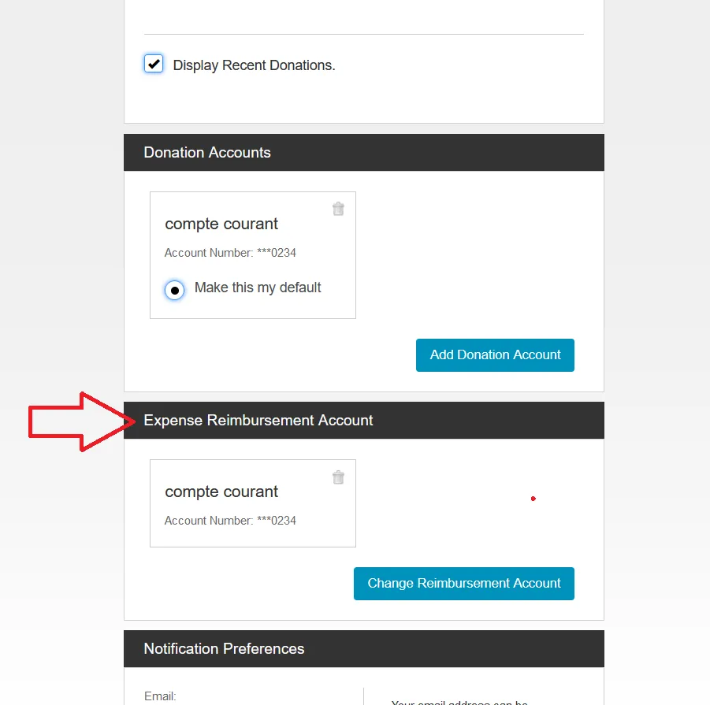

This is a quick guide to add a bank account to receive a direct deposit for you calling reimbursement purposes. It is ideal to open this page with a laptop or a computer over a phone or tablet.
Follow the intructions step by step
Step 1: Log in into your LDS account (LDS Tool) Ideally throught a computer or laptop
Here is the direct link to Log In into your LDS account if you need
Step 2: Click on Tools
Step 3: Click on Donations
Step 4: Click on Settings
Step 5: Scroll down to Expense Reimbursement Account.
You should see a checkbox that you can check to use the same account you use in Donation Accounts.
This way you will have direct deposit in your bank account for the reimbursement of expenses for your calling.
If you want a different account, click on Change Reimbursement account to add a new one.
